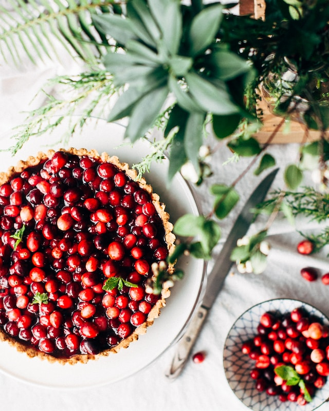
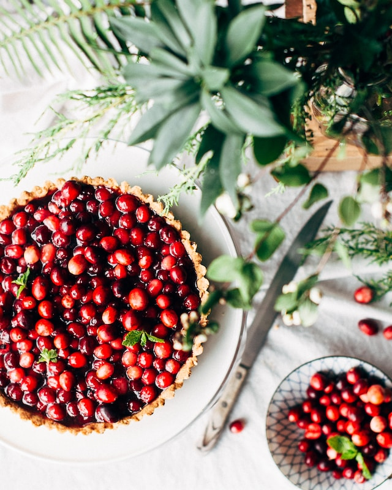

Fresh Cherry Tart
 

Description of Cherry Tarts
Cherry pie is a pie baked with a cherry filling. Traditionally, cherry pie is made with sour cherries rather
than sweet cherries. Morello cherries are one of the most common kinds of cherry used, but other varieties
such as the black cherry may also be used.
Cherry pie is associated with Europe and North America and is mentioned in the lyrics of American folk songs such
as "Billy Boy". Due to the cherry harvest in midsummer coinciding with Canada Day on July 1 and America's Independence
Day on July 4, cherry pie is often served on these holidays. It is also associated with the celebration of Washington's
Birthday because of the legend of young Washington's honesty regarding the felling of a cherry tree.
Cherry pie is often served and eaten with whipped cream or ice cream. A common preparation tradition in the United States
is to decorate the crust with ornate pastry patterns.
In the United States, 21 CFR 152.126 requires that frozen cherry pies contain at least 25% cherries, of which no more than
15% have blemishes. Artificial sweeteners are not permitted. In April 2019, the FDA proposed eliminating these standards.
Fresh Chery Tart Ingredients
- 1 (14.1 ounce) package refrigerated pie crusts
- 1 pound fresh sweet cherries, pitted
- 2 tablespoons minute tapioca
- 1/3 cup sugar
- 1/2 teaspoon almond extract
- 1 pinch salt
- 1/2 cup whipped cream, or as needed (optional)
- grated chocolate as needed for garnish (optional)
Directions How to Make
- Step 1
Place pie crusts on a lightly floured surface and roll out each crust with a rolling pin, so it is large enough to cut
three 5 to 5-1/2-inch circles, for a total of 6 tart crusts.
- Step 2
Fit each dough circle into a 4-inch removable-bottom tart pan. Press the dough against the sides of the pans, and prick the
bottom with a fork to prevent bubbling. Remove any excess dough by running the rolling pin across the top of each pan.
- Step 3
Refrigerate tart crusts until well chilled, about 45 minutes, keeping them refrigerated until ready to use.
- Step 4
Preheat the oven to 400 degrees F (200 degrees C).
- Step 5
In a large bowl, combine cherries, tapioca, sugar, almond extract, and salt. Remove the pans from the fridge and distribute
cherry mixture evenly among the tart pans. Place the pans on a baking sheet.
- Step 6
Bake in the preheated oven until cherries are soft and crust is golden brown, 25 to 30 minutes.